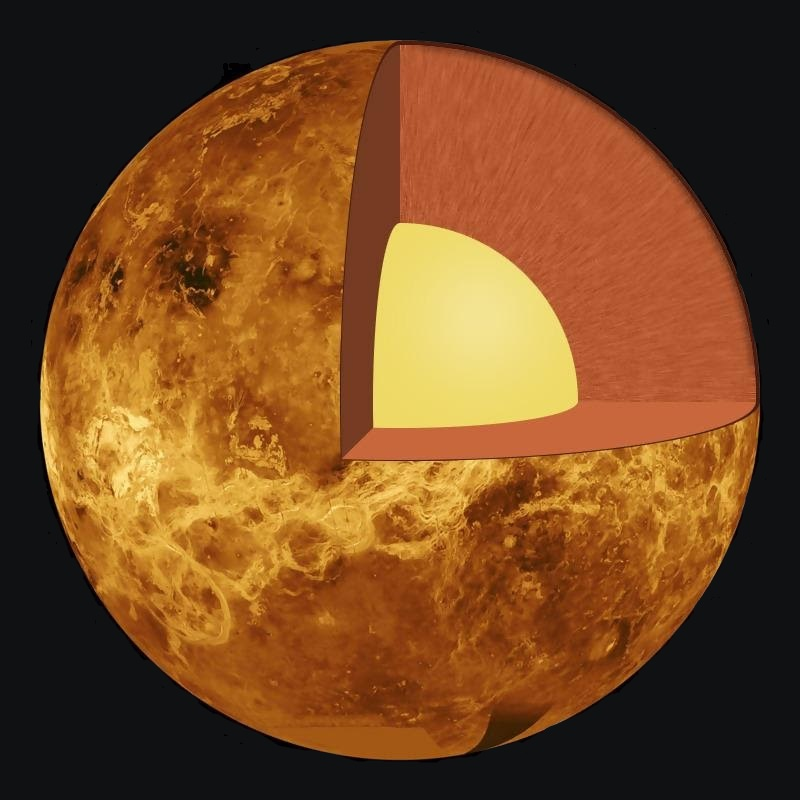

Key Facts & Summary

- Venus does not have any moons or rings.
- Venus is nearly as big as the Earth with a diameter of 12,104 km.
- Venus is thought to be made up of a central iron core, rocky mantle and silicate crust.
- A day on the surface of Venus (solar day) would appear to take 117 Earth days.
- A year on Venus takes 225 Earth days.
- The surface temperature on Venus can reach 471 °C.

Orbit
Venus orbits the Sun at an average distance of about 0.72 AU and completes an orbit every 224.7 days. Though most planetary orbits are elliptical, Venus’s orbit is the closest to circular with an eccentricity of less than 0.01. When Venus lies between Earth and the Sun in inferior conjunction, it makes the closest approach to Earth of any planet at a distance of 41 million km or 25 million miles. Venus spends most of its time away from Earth.

Rotation
There is a highly noticeable rhythm in the motion of Venus. After 8 years, it returns to the same place in the sky on the same date. This was known to many ancient civilizations such as the Maya, it is termed the pentagram of Venus. Over eight years, each phenomenon – each relative position of Earth, Venus, and the Sun – occurs five times, and then over the next eight years they repeat five times almost identically.
STRUCTURE
Venus's crust appears to be 70 kilometres (43 mi) thick, and composed of silicate rocks.Venus's mantle is approximately 2,840 kilometres (1,760 mi) thick, its chemical composition is probably similar to that of chondrites.Since Venus is a terrestrial planet, it is presumed to have a core made of semisolid iron and nickel with a radius of approximately 3,000 kilometres (1,900 mi).
expected that the uppermost mantle, from about 70 kilometres (43 mi) to 480 kilometres (300 mi) deep is mostly made of the mineral olivine. Descending through the mantle, the chemical composition remains largely the same but at somewhere between about 480 kilometres (300 mi) and 760 kilometres (470 mi), the increasing pressure causes the crystal structure of olivine to change to the more densely packed structure of spinel. Another transition occurs between 760 kilometres (470 mi) and 1,000 kilometres (620 mi) deep, where the material takes on the progressively more compact crystal structures of ilmenite and perovskite, and gradually becomes more like perovskite until the core boundary is reached.
SURFACE AND GEOLOGY
About 80% of the Venusian surface is covered by smooth, volcanic plains, consisting of 70% plains with ridges and 10% smooth or lobate plains. Venus does contain two highland “continents” that make up the rest of its surface area. One is located in the planet’s northern hemisphere and it is called Ishtar Terra after Ishtar, the Babylonian goddess of love, and it is about the size of Australia.

The second “continent” is located in the southern hemisphere, south of the equator, and it is called Aphrodite Terra, after the Greek goddess of love. It is the larger of the two highlands, at a roughly size of South America. Here there is a network of fractures and faults that covers much of the area. What is an enigma is the absence of evidence of lava flow and calderas.

With few and small impact craters, it is suggested that Venus’s dense atmosphere burns up smaller meteors, and in the same time it indicates that its surface is young. As far as we know, Venus doesn’t have tectonic activity like Earth.It is believed that water helps drive that, and Venus long ago lost its water because of the greenhouse effect. The surface even though it appears young, has craters that appear equally eroded that point towards a catastrophic event that resurfaced the planet about half a billion years ago.